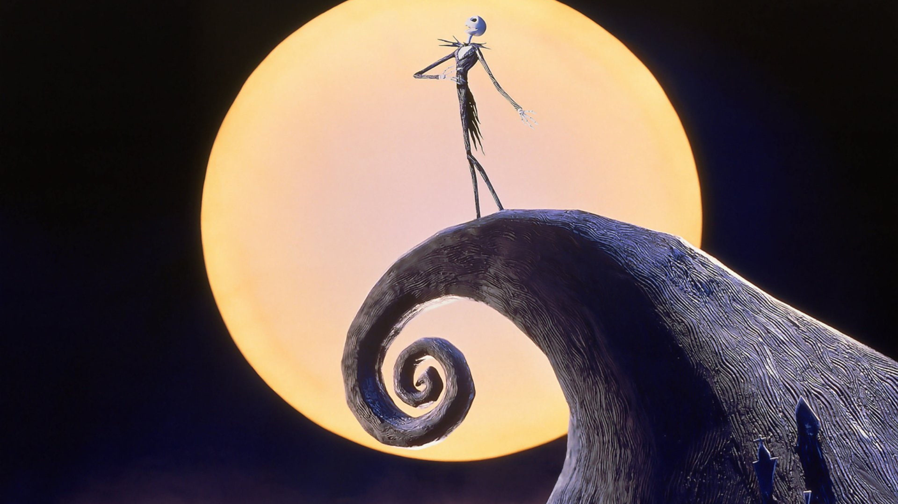

About the Movie
*The Nightmare Before Christmas* is a unique 1993 stop-motion animated musical that has captured the hearts of audiences for decades. Directed by Henry Selick and produced by Tim Burton, the film introduces us to the spooky yet enchanting world of Halloween Town. The story follows Jack Skellington, the beloved Pumpkin King, as he discovers Christmas Town and decides to bring the joy and wonder of Christmas to his dark, eerie home. However, things don't go as planned, and chaos ensues as Halloween meets Christmas.
This fan page is dedicated to celebrating the movie's rich characters, its imaginative storyline, and the incredible amount of work that went into bringing it to life. With its hauntingly beautiful music by Danny Elfman and its visually stunning stop-motion animation, *The Nightmare Before Christmas* has left a lasting impression on both children and adults alike. We invite you to explore the magic of Halloween Town, learn about its quirky residents, and take a look behind the scenes at the making of this timeless classic.
